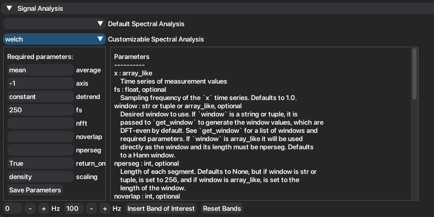
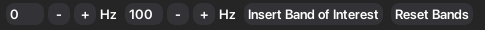
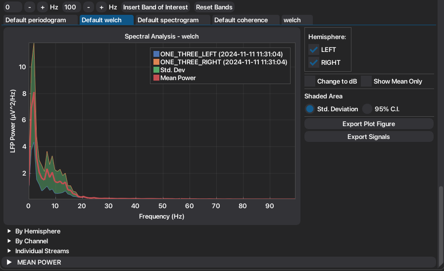
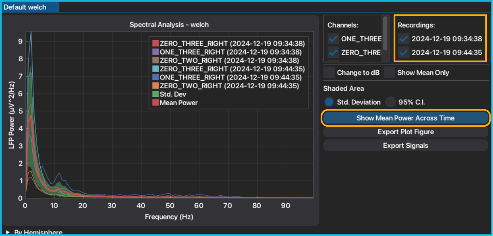
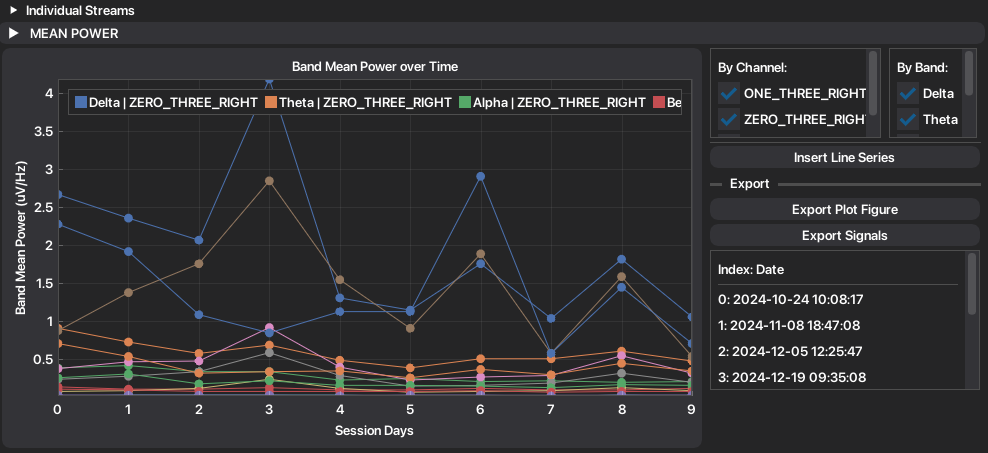
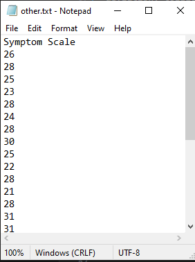
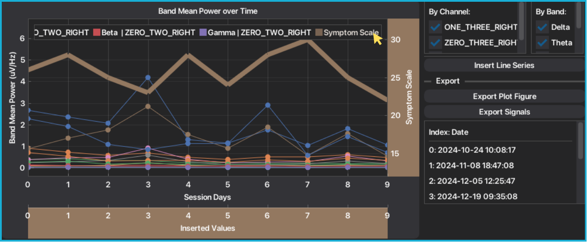
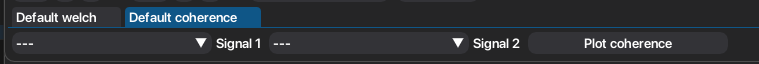

3. Signal Analysis¶
Acquiring intracranial recordings allows the possibility to analyze how the brain activity changes across different moments and locations. To properly study how the characteristics of the intracranial signals and oscillations change, several tools can be used. These changes are visible in the different domains: time, frequency and time-frequency, for which NeoDBS is fully prepared to analyze.
Signal analysis methods and tools have to be fine-tuned to the acquiring conditions so conclusions can be made with precision and certainty. However, for users with no background or knowledge in signal processing, this task can turn out to be very difficult.
Therefore, NeoDBS took an effort in creating robust pipelines that can be used by every user, researcher or physician, without any in-depth knowledge. To access these prepared methods, access "Defaul Signal Analysis", under the header "Signal Analysis".
Nonetheless, signal analysis parameters can be fully customized to the researcher's needs. When customizing the parameters, the user will be aided by the documentation and default parameter's values, as seen in the following picture. To access the customizable methods, access "Customizable Signal Analysis", under the header "Signal Analysis".

NeoDBS offers the following signal analysis tools for time-domain signals, both on the default and customizable pipelines:
- Power Spectral Density (PSD) Estimation
Periodogram
Welch PSD
DPSS Multitaper
- Coherence
Welch Coherence
Multitaper Coherence
Cross-Correlation
Spectrogram
Wavelet
Coherogram
Phase-Amplitude Coupling
Additionally, to further enhance spectral analysis, the user can add more frequency bands to be included in the analysis. The minimum interval for the frequency band is 2 Hz and can be added using the following buttons:

The default bands are: Delta (0.1-4 Hz), Theta (4-8 Hz), Alpha (8-12 Hz), Beta (12-30 Hz) and Gamma (30-100 Hz).
3.1. PSD Estimation¶
Analyzing the frequency component of signals is a very important tool when researching brain activity and biomarkers and neural signatures. Brain activity is characterized by rhythmic oscillations, whether in several important processes, like sleep, or by communicating within different regions and neural populations. It is crutial to look at how the energy of these oscillations changes in different moments. Using PSD estimation we can see how the power of each frequency differs.
The available PSD estimation methods present all the same information, with different time and spectral resolutions, which can be beneficial to different tasks or research goals. You can find a more detailed explanation in: https://www.mathworks.com/help/signal/ug/nonparametric-methods.html.
Under the "Signal Analysis" header, choose between default or custom signal analysis.
Choose which PSD estimation method you want to implement: Periodogram, Welch or DPSS.
If you chose custom analysis, fill the required parameters and press "Save Parameters". Then, press "Plot filtered signal".
A new child tab will be created, under the name of the method employed, with the result of the analysis and extracted features.

Mean and standard deviation are recalculated with every signal toggle.
To convert the PSD between original units and dB, toggle "Change to dB".
To show only the mean PSD, and respective standard deviation, toggle "Show Mean Only".
The standard deviation can be converted to the 95% Confidence Interval, by choosing in the radio button under "Shaded Area".
Automatically extracted features are organized into convenient groups, to facilitate visualization and exportation of features.
Plots, signals and tables can be easily exported.
3.1.1. Band Power Over Time¶
When more than one recording from the same-channel is present when employing the PSD method, the user can see how the mean power of each frequency band changes over time.

Press "Show Mean Power Across Time".
The mean power per band, per channel, is plotted. The respective dates are indexed on the right side of the plot.

If you want to add an external information, press "Insert Line Series". This will accept an txt file, with the following structure: first line is the label of the series, and every line stores the value of each time point.

The inserted series is plotted on secondary axis allowing the user to zoom and move around the inserted values independently from the mean power.

You can insert multiple line series, although it is not recommended.
3.2. Coherence¶
Coherence is a tool that analyzes the synchrony between two signals, serving tipically to study functional connectivity between regions and populations. Coherence values ranges from 0 to 1, with 0 meaning no linear relationship at the frequency and 1 representing perfect linear coupling.
Under the "Signal Analysis" header, choose between default or custom signal analysis.
Choose which coherence method you want to implement: Coherence (Welch) or Multitaper Coherence.
Select which combination of signals you want to analyze. After, press "Plot Coherence".

Both Absolute and Imaginary components of coherence are plotted and features are automatically extracted.